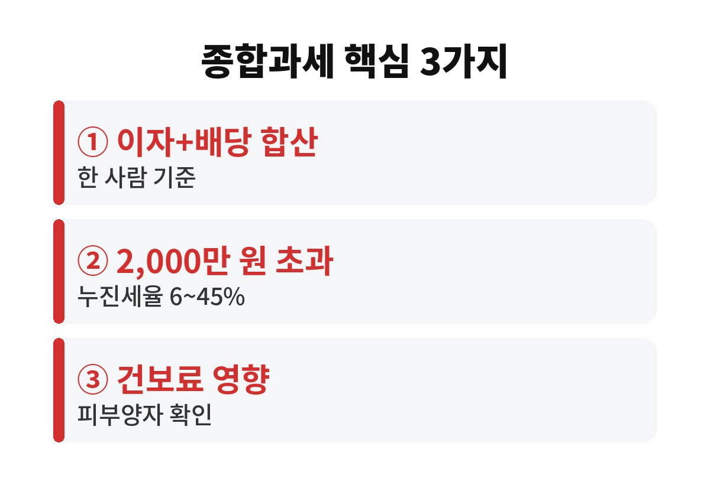

금융소득종합과세 2000만원 기준은 한 해 동안 받은 이자와 배당을 모두 합친 금액이 2,000만 원을 넘으면 다른 소득과 합쳐 세금을 다시 매기는 제도예요. 예금 이자와 주식 배당을 함께 받는 분, 특히 은퇴 후 배당 수입이 있는 부모님이라면 올해 합계가 얼마인지 지금 계산해 보셨나요?
은행 예금 이자, 채권 이자, 주식 배당금처럼 돈이 돈을 벌어 온 소득이 대부분 대상이에요. 은행 계좌별로 따로 보면 얼마 안 되는 것 같아도, 세법은 사람 한 명 기준으로 전부 합산해서 봅니다. A은행 800만 원, B은행 700만 원, 배당 600만 원이면 합계 2,100만 원이라 기준을 넘는 거죠.
평소에는 이자나 배당을 받을 때 15.4%(소득세 14%+지방소득세 1.4%)가 미리 떼이고 끝나요. 그래서 대부분은 세금 걱정을 안 해요. 그런데 합계가 2,000만 원을 넘으면 이야기가 달라져요.
2,000만 원까지는 기존처럼 15.4%로 끝나지만, 넘은 부분은 근로소득·사업소득·연금소득 등과 합쳐서 누진세율로 계산해요. 누진세율은 소득이 많을수록 6%에서 최고 45%까지 올라가는 구조라, 이미 월급이 많은 직장인일수록 넘은 금액에 붙는 세율이 높아질 수 있어요.
이미 떼인 15.4%는 나중에 정산해서 빼 주니까 이중으로 내는 건 아니에요. 다만 합산 세율이 15.4%보다 높으면 5월 종합소득세 신고 때 차액을 더 내야 해요. 예상 못 한 고지서가 날아오는 이유가 바로 이거죠.
여기서 많은 분이 놓쳐요. 소득이 늘면 건강보험료 쪽에도 영향이 갈 수 있어요. 자녀 건강보험에 피부양자로 올라 있는 부모님은 소득 합계가 일정 기준을 넘으면 피부양자 자격을 잃고 지역가입자로 보험료를 직접 내야 할 수 있어요. 기준 금액과 적용 방식은 바뀔 수 있으니, 국민건강보험공단에 본인 상황을 꼭 직접 확인하세요.
세금 몇십만 원보다 매달 내는 보험료 부담이 더 크게 느껴지는 경우도 있어요. 그래서 2,000만 원이라는 숫자는 세금 기준이자 생활비 기준이기도 해요.

먼저 올해 받은 이자와 배당, 앞으로 받을 예정인 금액을 한 장에 적어 보세요. 은행 앱과 증권사 앱에서 연간 수령액을 조회할 수 있어요. 합계가 1,500만 원을 넘는다면 슬슬 관리가 필요하다는 신호예요.
다음으로 세제 혜택이 있는 상품을 살펴보세요. 가입 조건이 되는 비과세·분리과세 상품이나 ISA 같은 절세 계좌는 이자·배당이 합산에서 빠지거나 따로 계산돼요. 요건은 사람마다 다르니 가입 전 금융사 창구에서 자격을 확인하는 게 안전해요. 배당은 보통 연말 기준일을 지나 지급되니 받는 시기도 미리 챙겨 두면 좋아요.
마지막으로, 본인 이름으로만 모으지 않고 가족 간 자산 배분을 고민하는 분도 있는데, 증여세 문제가 걸릴 수 있으니 반드시 세무사와 상담한 뒤 결정하세요. 막판에 서두르다 오히려 더 큰 세금을 내는 일은 생각보다 흔해요.
예를 들어 이런 경우를 떠올려 보세요. 은퇴하고 정기예금 이자로 생활하다가, 몇 해 전 사 둔 배당주에서 배당이 꽤 들어오기 시작했어요. 계좌마다 따로 보면 전혀 부담이 없던 금액인데, 어느 해 금리가 오르고 배당까지 늘면서 합계가 한 번에 기준을 넘어버리는 거죠. 본인은 평소와 다를 게 없다고 느끼는데, 세금과 보험료 고지서만 갑자기 달라지니 당황할 수밖에 없어요.
또 하나 기억할 점은, 신고 대상이 되는 소득은 받은 날을 기준으로 한 해씩 따로 계산한다는 거예요. 금리가 높은 해에 만기가 몰리면 그해만 기준을 넘길 수 있어요. 그래서 예금 만기를 한 해에 몰아두지 않고 나눠 두는 것도 현실적인 방법이에요. 큰돈이라면 만기 시점만 조정해도 합산 금액이 달라질 수 있답니다.
정리하면 겁먹을 필요는 없지만 모른 채 지나가면 손해라는 이야기예요. 숫자 하나만 미리 알아도 선택지가 생기니까요.
혹시 올해 이자와 배당 합계가 얼마인지 아직 모르고 계셨다면, 오늘 앱을 열어 한 번만 확인해 보세요. 이런 생활 속 돈 이야기가 도움이 됐다면 구독해 주세요. 여러분은 합계가 얼마쯤 나오시나요?
본 글은 일반적인 정보 제공이며 투자 권유가 아닙니다. 세율·기준은 개인 상황과 법 개정에 따라 달라질 수 있습니다.